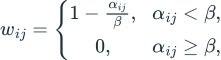
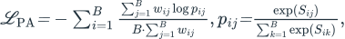

整体概括
换相机之后，动作不应只跟着画面变
PAIR 研究的不是换任务后能否继续操作，而是在机械臂、任务和动作坐标系不变时，换一个相机位姿能否保住成功率。输入包含单视角图像、相机射线、机械臂本体状态和任务规格；输出是未来一段动作。做法是在行为克隆之外，用机器人状态的接近程度组织图像与射线的联合表征。
对照原文证据
We consider visuomotor policy learning from visual observations o , robot proprioceptive state s , camera rays r , and a task specification g (e.g., language), where we augment imitation learning with a spatially grounded visual representation learning problem. Specifically, a vision encoder f_{\phi} maps the visual observation and optionally its associated camera geometry to a latent representation z=f_{\phi}(o,r) , where the ray information r provides a geometry-aware positional encoding for the visual tokens.The resulting representation is then used by a visuomotor policy \pi_{\theta}(a_{1}\mid z,s,g) , which predicts a sequence of future robot actions over an action horizon H_{p} .The policy always consumes a single camera view; single-view and multi-view settings differ only in how the remaining views are used during training. Critically, proprioception features used to align the vision features in PAIR is provided as extra input modality for all cases.PAIR is a highly adaptable framework: it can be used to train lightweight policy classes such as diffusion policy (DP) or fine-tune pre-trained Vision-Language-Action (VLA) models. Specifically, PAIR builds on the pre-trained SigLIP-family encoders and incorporates the proposed alignment objective as an auxiliary loss alongside the standard behavior cloning objective.最有说服力的是同一基线拆成有射线与无射线
在给定的相机变化范围内，加射线且做本体对齐的版本在仿真和实体任务中都占优；但仅做本体对齐不是通用增益。只与无射线行为克隆比较，会把几何输入和训练监督的变化混在一起；要判断对齐的贡献，应查看相同射线配置下的对照。
对照原文证据
The empirical results show that proprioceptive alignment is not uniformly beneficial on its own, with mixed gains in the absence of ray conditioning. In contrast, when combined with rays, PAIR consistently outperforms the baseline methods across all evaluated settings, which indicates that camera-ray conditioning is a computationally cheap lever for unlocking the benefits of proprioceptive alignment.On LIBERO, PAIR with ray conditioning achieves the highest average success rate of 88.9%, outperforming ray-conditioned BC by 5.6% points. Compared with TCN, PAIR further improves the maximum success rate by 4.9% and 3.3% points with and without ray conditioning, respectively.This improves over BC without ray conditioning by 23.3% and 26.7% points, ray-conditioned BC by 21.1% and 25.6% points, and PAIR without ray conditioning by 13.3% and 18.9% points, respectively.Research gap
像素里看起来一样，不代表机械臂处于同一个状态
相机与末端的相对位姿相同时，不同的基座系末端位姿仍可能投影得相似；换个相机，同一个机器人状态又可能看起来不同。原文用两种混淆说明为什么只靠图片推断动作不稳定：二维外观的相似性和基座系里的物理相似性并不是同一件事。
对照原文证据
As the camera viewpoint changes, a fixed underlying task state can give rise to substantially different visual observations through changes in perspective and visibility. Conversely, distinct physical states may appear deceptively similar when they share similar camera-relative geometry or when the task-relevant context is only partially captured within the camera’s field of viewLet T_{BE} and T_{BC} denote the end-effector pose and the camera pose in the robot-base frame, respectively. The visual appearance of the robot end-effector is governed in large part by their relative transformso that the robot appears similar despite occupying different physical states, as illustrated in Fig. .A . Conversely, the same physical state can appear substantially different under varied camera poses. This leads to conflicting signals for the vision encoder: visually similar observations may be pushed apart, while visually dissimilar observations are pulled together, without specifying the camera transformations responsible.射线告诉模型怎么拍，对比监督告诉它该对齐什么
相机射线给出像素背后的投影几何，却并不会令特征自动按本体状态聚类；仅按本体状态对齐，则可能要求网络区分外观相似却投影几何不同的图像。PAIR 的取舍是把两条信息流一起用，检验它们是否互补，而不是宣称以往所有视角增强、时序对齐或相机条件方法都无效。
对照原文证据
However, while camera-ray conditioning provides useful viewpoint context, it does not by itself ground visual representations in the projected task state. Similarly, while alignment using physically grounded signals can encourage invariance across physically similar states, this can produce conflicting supervision by ignoring viewpoint-dependent projection without camera context. In light of this, we propose PAIR, a contrastive learning framework for viewpoint-robust manipulation that jointly learns image–ray representations using Plücker embeddings with supervised proprioceptive alignment.Several methods study viewpoint robustness directly from RGB observations with data augmentation techniques including systematic data collection [ 21 ] or novel-view synthesis [ 2 ] , while other methods improve the learning signal through cross-view supervision [ 16 ] and contrastive learning [ 9 , 8 ] .算法主线

原图由 arXiv 加载；若未显示，可打开下方原图链接。
跟着原图读
- 从左向右追两路输入
A 顶部是 Raw Image 的视觉 patch；下面是 EEF2Cam 与 Base2Cam 射线 patch。对照右侧的 One-init 与 Zero-init：初始投影的视觉块保留原特征，射线块初始不贡献，训练后可学会使用几何。
- 注意两处红色不是一种量
A 的红色定位 Plücker 矩为零、经过各自参照原点的射线；B 的红点则代表本体状态不相似的样例。B 中 a–e 的绿点是相似机器人状态的不同相机观察，箭头示意对比监督的方向。
B 没有带单位的坐标轴或数值色标，是机制示意；不能把点间距当作实测特征距离或相机角度，也不能从 A 的颜色读出深度。
先给每个视觉 patch 两套几何参照
同一个像素的相机射线分别用末端坐标和基座坐标表达，再经轻量卷积变成与视觉 patch 对应的特征。前者随末端移动，后者固定在机器人上。拼接之后用线性层投回视觉通道宽度，初始化时保留视觉、不注入新射线权重，接着加上原预训练编码器的位置嵌入。
对照原文证据
For each visual token x_{i}\in\mathbb{R}^{c} and each of the n_{r} robot arms, we construct the corresponding Plücker rays and encode them using lightweight convolutional networks. Specifically, we obtain two projected camera ray embeddings: r_{i}^{\mathrm{CE}_{k}}\in\mathbb{R}^{r} , expressed relative to the end-effector of robot k , and r_{i}^{\mathrm{CB}_{k}}\in\mathbb{R}^{r} , expressed relative to the fixed robot base, as shown in Fig. 2 .A .The end-effector-relative rays encode a moving target that changes with the robot’s movement, whereas base-relative rays provide a persistent physical anchor across observations. These references jointly encode dynamic and static geometric structure, providing the geometric cues necessary for proprioceptive alignment across changes in visual appearance.The ray features are injected into the image features through an identity-initialized linear projection, which acts as a selective positional embedding for each vision token.The resulting image-ray patches \tilde{x}_{i} is then added to the original position embedding of the pre-trained SigLIP model. As a result, ray injection introduces minimal architectural change: a single identity-initialized linear layer is added to the original model architecture.再用位置、朝向和夹爪开度决定正样本权重
训练批内先算末端位置、四元数朝向、夹爪开度构成的距离；双臂时按对应手臂求距离再平均。不是把样本简单分成同一帧与不同帧，而是按全局分位排序给近邻软权重。对归一化的图像—射线向量计算加权对比损失，同时用示范动作做行为克隆；多视角训练可从另一台相机抽取目标视图。
对照原文证据
Specifically, let \hat{z}_{i} denote the \ell_{2} -normalized latent representation of observation i , and let the corresponding proprioceptive state be s_{i}=(p_{i},q_{i},g_{i}) , where p_{i} , q_{i} , and g_{i} denote the end-effector position, orientation, and gripper width, respectively. Given a training batch of size B , we define the pairwise similarity matrix between observations i and j asFor multi-robot settings, the pairwise distances between corresponding arms are averaged. We convert the geometric distance in Eq. ( 9 ) into a percentile-based soft positive weight. Let \alpha_{ij} denote the global percentile rank of D_{ij} and \beta the percentile cutoff. We definewhere, in the single-view setting, diagonal pairs (i=j) are excluded from the loss. This pulls image-ray representations with similar robot states closer, while pushing apart those with dissimilar robot states, as shown in Fig. 2 .B . The final training objective combines the behavior cloning loss \mathcal{L}_{BC} with the proprioception alignment loss \mathcal{L}_{PA} :Proprioceptive alignment loss in Eq. ( 12 ) as the auxiliary loss. In the multi-view setting, the target view is sampled from the set of candidate camera views to provide cross-view learning signals.多视角信号只在训练用，不等于部署需要双相机
每次动作预测仍只用一路相机视图并接收本体状态；其他相机只提供训练采样或对齐目标。部署没有批内状态近邻、示范动作或对比损失，但有射线的版本仍需相机几何与当前末端状态。作者假设相机在不同回合间可换位、同一回合内固定，不能把结果直接推广到连续移动相机。
对照原文证据
The policy always consumes a single camera view; single-view and multi-view settings differ only in how the remaining views are used during training. Critically, proprioception features used to align the vision features in PAIR is provided as extra input modality for all cases.Proprioceptive alignment loss in Eq. ( 12 ) as the auxiliary loss. In the multi-view setting, the target view is sampled from the set of candidate camera views to provide cross-view learning signals.The end-effector-relative rays encode a moving target that changes with the robot’s movement, whereas base-relative rays provide a persistent physical anchor across observations.We assume that camera positions change across episodes, but remained fixed within each episode.关键公式
分清投影几何和真正施加的训练约束
相对位姿解释表观为何碰撞；Plücker 射线写出可送入模型的几何量。作者用互易积的双线性结构说明注意力有表达这类关系的能力，并未把互易积硬编码为每个注意力头的得分，也没有证明训练一定会恢复这个几何算子。下列射线公式和对比公式承担的是不同层次的角色。
对照原文证据
Let T_{BE} and T_{BC} denote the end-effector pose and the camera pose in the robot-base frame, respectively. The visual appearance of the robot end-effector is governed in large part by their relative transforma pairwise measure of their geometric incidence. When projected ray features enter the query and key vectors, the geometry–geometry component of an attention score takes the bilinear formThis structure is particularly relevant in robot demonstrations, where the robot embodiment provides a persistent physical reference with consistent correspondences across viewpoints for similar proprioceptive states. We use this compatibility to motivate exposing ray geometry to the attention layers of the vision encoder.距离决定监督方向，相似度决定模型的预测
状态距离是训练监督，不是表征相似度；前者经分位权重指定哪些配对该靠近，后者经温度与行内归一化得到输出概率。单视角用同视图向量并剔除对角配对；多视角目标来自对应的另一视图。行为克隆仍监督动作，不把本体距离直接当成动作误差。
对照原文证据
where \tau is the sharpness temperature. In the single-view setting, \tilde{z}_{j}=\hat{z}_{j} , while in the multi-view setting, \tilde{z}_{j}=\hat{z}^{\mathrm{cv}}_{j} , which is a cross-view instance of \hat{z}_{j} .For multi-robot settings, the pairwise distances between corresponding arms are averaged. We convert the geometric distance in Eq. ( 9 ) into a percentile-based soft positive weight. Let \alpha_{ij} denote the global percentile rank of D_{ij} and \beta the percentile cutoff. We definewhere, in the single-view setting, diagonal pairs (i=j) are excluded from the loss. This pulls image-ray representations with similar robot states closer, while pushing apart those with dissimilar robot states, as shown in Fig. 2 .B . The final training objective combines the behavior cloning loss \mathcal{L}_{BC} with the proprioception alignment loss \mathcal{L}_{PA} :相机为什么会把不同物理状态拍得相似？
把末端位姿从基座系变换到相机系，比较的是相机与末端的相对关系。示例（不是论文数据）：若三个坐标系的轴同向，末端在基座坐标的 x = 3 m、相机在 x = 1 m，末端在相机坐标就是 x = 2 m；二者分别移到 4 m 和 2 m，结果仍是 2 m。
符号与实现提醒
- T_BE
- 从末端 E 到基座 B 的刚体位姿，可用 4×4 齐次矩阵表示。
- T_BC
- 从相机 C 到基座 B 的刚体位姿；取逆把基座坐标换成相机坐标。
- T_CE
- 从末端 E 到相机 C 的变换；平移用三者统一的长度单位。
先核对外参与手眼变换的方向，再按原式矩阵顺序相乘；相对末端位姿接近不等于整张图像、物体位置或动作都相同。
用方向和矩描述一条相机射线
相同的方向可以穿过不同位置，力矩形式补上相对参考原点的偏移信息。示例：取射线上一点 (1,0,0) m，方向为 (0,1,0)，叉积是 (0,0,1) m；若沿这条线改取 (1,2,0) m，叉积仍为 (0,0,1) m。
符号与实现提醒
- o_i
- 该参考系中射线的相机原点，即三维位置向量。
- u_i
- 沿射线的三维方向向量；若单位归一化则无量纲。
- m_i
- 以该参考原点为参照的三维 Plücker 矩；单位方向时与位置同单位。
- r_i
- 两个三维分量依原式顺序拼成六维表示。
两种参照变换分别应用；改变参考原点会改变矩。经过参考原点时矩为零，但这不意味着射线特征或学习后的权重为零。
对比学习如何判定两个机器人状态够不够近？
平移、旋转与夹爪宽度三个差异共同决定距离。示例：平移差 0.04 m、旋转差 0.2 rad、开度差 0.01 m，取示例比例 0.05 m/rad，则距离为 0.04 + 0.05×0.2 + 0.01 = 0.06 m；这只是说明加权的尺度，不是论文测量数据。
符号与实现提醒
- p_i, p_j
- 两帧的末端三维位置。
- q_i, q_j
- 两帧的单位四元数；原式 (10) 使用内积绝对值，消除正负号二义性。
- g_i, g_j
- 夹爪开度标量；不是任务规格符号。
- λq
- 控制旋转项尺度的系数；位置和开度若以长度输入，宜用相容比例。
- D_ij
- 批内几何距离标量；多臂先逐对计算再平均。
四元数须归一化，数值内积宜裁到反余弦定义域；重现实验时需核实长度单位与尺度规范，不把该距离解释为物体或场景状态的真值距离。
由分位排序产生连续软标签

权重由相对排序产生，并非拿物理距离直接与固定米数阈值比。示例：设截止分位 β = 0.10；分位 0.04 的配对权重为 1 − 0.04/0.10 = 0.60，分位恰为 0.10 的权重为 0。
符号与实现提醒
- alpha_ij
- 对应配对距离的全局分位秩，用无量纲比例。
- β
- 正样本的截止分位，无量纲。
- w_ij
- 正样本软权重，取值在零和一之间。
换数据或换批内构成会改变排名对应的距离，不能把训练分位阈值当通用物理半径。并列排名细则，以可核对实现为准。
按软标签对每个锚点做归一化的 InfoNCE

先将相似度 logit 在同一锚点行中归一为概率，再对有正权重的候选取加权负对数。示例：三候选 logits 都相同，各概率为 1/3，若权重分别是 1、0.5、0，该行归一后损失仍为 ln 3，约 1.10（总体再按批平均）。
符号与实现提醒
- B
- 一个训练批的大小；公式外层遍历各锚点。
- i, j, k
- 锚点、目标候选、归一化求和索引。
- S_ij
- 两归一化特征的点积除以温度，见原式 (8)。
- p_ij
- 固定锚点后由候选 softmax 得到的无量纲概率。
- w_ij
- 由机器人状态几何分位产生的软权重，不是模型概率。
- L_PA
- 本体对齐损失，随后按原式 (13) 加到行为克隆损失。
单视角按原文剔除对角配对。全局截断后若某行没有正权重，公式分母为零；已读正文未交代如何处理该行。实现时应明确空正例策略及其批平均分母，不可默认原文采用某种处理。
实验怎么做
仿真重采相机位姿，实体回合重新摆放和标定
MimicGen 三项 D1 单任务各用 1,000 条演示；AlohaGym 方块转移用 50 条人类与 50 条规划演示；LIBERO 训练覆盖 130 项任务、6,500 个回合。重采相机外参但不更改任务；LIBERO 每任务预抽 50 个未用于采集的相机位姿，并要求末端始终可见。这比随意拆分同一轨迹的相邻帧更贴近换相机位置的问题。
对照原文证据
[ 12 ] is a benchmark for imitation learning with synthetically augmented demonstrations. We use MimicGen as a standard single-task learning benchmark to study viewpoint robustness. We include the Square, Three Stack, and Three Piece Assembly tasks using the D1 distributions. Each task includes 1,000 demonstrations.[ 27 ] provides a canonical bimanual manipulation task on the ALOHA platform. We evaluate PAIR on the cube transfer task, where the dataset consists of 50 human and 50 motion-planned demonstrations, totaling 100 episodes.[ 11 ] is a manipulation benchmark comprising four task suites: Object, Goal, Spatial, and Long, which emphasize object variation, spatial reasoning, goal-conditioned behavior, and long-horizon task execution, respectively. LIBERO evaluation uses language conditioning to distinguish among tasks. Policies are trained on the full LIBERO dataset spanning 6,500 episodes in 130 tasks.For LIBERO, we pre-sample 50 camera poses for each task, all distinct from those used during data collection, and apply the same sampling criterion to ensure that the robot end-effector remains visible throughout each rollout. In addition, we evaluate both single-view and multi-view scenarios, where multiple viewpoints are provided for each training demonstration in the multi-view setting. A comparison of the camera settings is provided in Table II , and the distribution of camera poses is shown in Fig. 3 .两类策略的训练预算与成功率统计口径
Diffusion Policy 与 SmolVLA 分别训练 200k 和 160k 步；各保存 5 个检查点，表 III、IV 报 3 个种子内各自取最大成功率之后的结果。单任务每检查点跑 200 次；LIBERO 每任务 50 次、每任务组 500 次。该口径不是同一个预先锁定检查点的得分；原表的 ± 未明确标注为哪种不确定性。
对照原文证据
Diffusion Policies are trained for 200k steps, with five checkpoints saved at 10k-step intervals from 160k to 200k steps. SmolVLA models are trained for 160k steps, with five checkpoints saved at 10k-step intervals from 120k to 160k steps. For image augmentation, we randomly crop 256\times 256 images and their corresponding Plücker embeddings to 224\times 224 during training and apply a center crop during inference.For evaluation, single-task policies are rolled out 200 times for each model checkpoint. For LIBERO, each task is evaluated over 50 rollouts; with 10 tasks per task suite, this totals 500 rollouts per suite. The action horizon for open-loop rollout T_{a} is 12 for all cases except AlohaGym, which uses 16. Table I summarizes the training and evaluation hyperparameters for both policy classes.TABLE III: Success rate (%) of Diffusion Policy (DP) on three MimicGen tasks and ALOHA Transfer across 3 seeds. For each seed, the maximum success rates from 5 checkpoints is reported.TABLE IV: Success rate (%) of SmolVLA on the four LIBERO task suites across 3 seeds. For each seed, the maximum success rates from 5 checkpoints is reported.训练代价按一次前向和一批解码分别算
论文在 SmolVLA 对照中给出无／有射线的每次前向 FLOPs：BC 为 1.68／1.73，TCN 为 14.1／14.7，PAIR 为 5.83／6.05，单位为 10 的 13 次方。每训练批分别解码 64、640、256 帧。PAIR 比 TCN 省前向计算和解码，但比无辅助损失的 BC 贵；这些不是总训练时间或实机控制延迟。
对照原文证据
TABLE VII : Computational and dataloading cost of training SmolVLA with BC, TCN, and PAIR. FLOPs are reported per forward pass for models without and with ray conditioning, respectively. Decoded Frames denotes the number of camera frames decoded during dataloading for each training batch. Training settings are provided in Table I .B.Metric BC TCN PAIR FLOPs ( \times 10^{13} , \downarrow ) 1.68 / 1.73 14.1 / 14.7 5.83 / 6.05 Decoded Frames ( \downarrow ) 64 640 256Table VII compares the training cost of BC, TCN, and PAIR. While both TCN and PAIR introduce additional overhead relative to BC due to their auxiliary alignment objectives, PAIR is substantially more efficient than TCN, requiring 58.8% fewer FLOPs and 60% fewer decoded frames. In addition, ray input incurs only a small computational overhead, increasing FLOPs by 3.0% for BC and 3.8% for TCN and PAIR.实机比较固定任务，并排除近似重复视点
Franka Research 3 的三个桌面任务各用 100 条遥操作演示，联合微调 SmolVLA；每种设置每任务试跑 30 次，回合重新摆放相机并用 AprilTag 估位。若新相机的相机位置和地面注视点都距采集视点不到 1 cm，则重采；这定义的是视点去重，并不声明物体、机械臂或场景都做了独立留出。作者列出项目主页作为进一步查阅入口；本站未运行其代码。
对照原文证据
We design three real-world tasks using a Franka Research 3 robot and two RealSense D435 cameras capturing images at 30 FPS, as illustrated in Fig. 3 . For each of the three tasks, 100 demonstrations are collected using VR-controlled teleoperation. For each rollout, cameras are re-positioned, and their poses are estimated using AprilTags [ 13 ] . Similar to LIBERO, we fine-tune the pre-trained SmolVLA on all three tasks jointly with language conditioning. We compare BC and PAIR with and without ray conditioning, using 30 rollouts per task in each setting.To ensure that evaluation is conducted from genuinely unseen viewpoints, after each camera calibration, we resample a camera pose if both its camera position and ground-plane look-at point are within 1 cm of those of any viewpoint sampled during data collection.outperforms the behavior cloning baseline without ray conditioning by 12.7 % and 26.7 % points, respectively, demonstrating stronger generalization to unseen viewpoints. Project website: PAIRrobot.github.io.提升与证据
DP：优势来自完整组合，但平均增量需谨慎引用
表 III 的带射线 PAIR 在单视角与多视角的各任务格均高于带射线 BC 和 TCN；反例出现在多视角 ALOHA：无射线 PAIR 的 51.0% 低于无射线 BC 的 55.7% 和无射线 TCN 的 58.7%。正文单任务平均增量未说明加权；按表的各任务与视角格等权不能复得其报告，故这里以分任务表格为准。
对照原文证据
Single None (BC) 11.7 \pm 1.2 13.4 \pm 2.1 20.1 \pm 1.1 34.1 \pm 0.9 10.2 \pm 1.3 18.1 \pm 2.1 25.3 \pm 1.6 35.2 \pm 2.9 Temporal alignment (TCN) 11.7 \pm 1.5 16.3 \pm 4.5 19.0 \pm 2.0 39.0 \pm 2.6 12.7 \pm 2.1 18.3 \pm 2.5 27.3 \pm 1.5 35.3 \pm 3.5 Proprio alignment (PAIR) 20.7 \pm 2.8 24.4 \pm 2.9 36.3 \pm 2.5 45.1 \pm 3.7 20.1 \pm 3.5 29.1 \pm 1.8 30.0 \pm 0.7 42.3 \pm 2.1Multi None (BC) 26.9 \pm 4.6 24.1 \pm 1.1 44.1 \pm 1.8 49.6 \pm 2.6 17.3 \pm 1.5 27.1 \pm 1.8 55.7 \pm 2.1 66.3 \pm 2.9 Temporal alignment (TCN) 28.0 \pm 2.0 32.3 \pm 2.5 47.3 \pm 2.1 50.0 \pm 3.0 17.7 \pm 2.1 25.3 \pm 2.1 58.7 \pm 3.2 70.0 \pm 5.3 Proprio alignment (PAIR) 34.7 \pm 3.0 38.5 \pm 3.4 48.9 \pm 3.7 53.9 \pm 2.8 23.2 \pm 3.4 30.5 \pm 3.4 51.0 \pm 2.0 74.0 \pm 2.6In single-task learning, PAIR with ray conditioning improves the maximum success rate on average by 16.2%, 9.1%, and 9.5% points over BC without ray conditioning, ray-conditioned BC, and PAIR without ray conditioning, respectively.SmolVLA：LIBERO 总体占优，单组仍有反例
带射线 PAIR 在 LIBERO 四个任务组的平均成功率为 88.9%，带射线 BC 为 83.3%，差 5.6 个百分点。无射线时，Goal 组中 PAIR 的 84.7% 低于无射线 BC 的 90.4% 和 TCN 的 88.5%；同时，不带射线的 BC 在 Goal 组也高于带射线 BC。不能把整个表解读成每组加射线都有益。
对照原文证据
Object Goal Spatial Long Average Auxiliary Objective w/o Ray w/ Ray w/o Ray w/ Ray w/o Ray w/ Ray w/o Ray w/ Ray w/o Ray w/ Ray None (BC) 94.6 \pm 0.3 92.9 \pm 0.6 90.4 \pm 0.6 89.2 \pm 0.5 82.8 \pm 0.9 84.3 \pm 1.1 57.9 \pm 1.1 66.9 \pm 0.9 81.4 83.3 Time-contrastive (TCN) 93.3 \pm 0.4 94.1 \pm 0.3 88.5 \pm 0.6 87.3 \pm 0.9 79.5 \pm 0.5 84.3 \pm 1.1 61.1 \pm 1.1 70.4 \pm 0.6 80.6 84.0Proprio-contrastive (PAIR) 92.8 \pm 0.5 95.7 \pm 0.3 84.7 \pm 0.5 90.8 \pm 0.6 84.5 \pm 0.6 86.8 \pm 0.5 73.4 \pm 3.1 82.1 \pm 0.7 83.9 88.9On LIBERO, PAIR with ray conditioning achieves the highest average success rate of 88.9%, outperforming ray-conditioned BC by 5.6% points.实体任务：抓住不等于做完
完整 PAIR 在三个实体任务中平均子任务完成率为 76.7%，最终任务完成率为 57.8%；相对无射线 BC 分别提高 23.3 和 26.7 个百分点，相对同样带射线的 BC 则分别提高 21.1 和 25.6 个百分点。图画的是同一任务的抓取和最终端点，不是把两根柱子分别当两批样本。
对照原文证据
As shown in Fig. 4 , PAIR with ray conditioning achieves the highest success rates across all three tasks, averaging 76.7% and 57.8% points on subtask and final task completion, respectively.This improves over BC without ray conditioning by 23.3% and 26.7% points, ray-conditioned BC by 21.1% and 25.6% points, and PAIR without ray conditioning by 13.3% and 18.9% points, respectively.Fig. 4 : Success rates (%) of BC (red) and PAIR (blue), with and without ray conditioning, in three real-world tasks. Both subtask completion rates and final task success rates are reported.双参照删减和注意力读数检验的是不同问题
表 V 的三个条件都在去掉任一参照后降分；Aloha Transfer 的多视角设置去基座射线损失 18.8 个百分点、去末端射线损失 7.0 个百分点。LIBERO 工具中心 token 的归一化注意力从无射线 BC 的 1.28 到完整 PAIR 的 3.52。这与几何提示帮助定位相容，但注意力增大不是成功率增益的因果证据。
对照原文证据
TABLE V : Ablation of end-effector-relative ( r^{\mathrm{CE}} ) and robot-base-relative ( r^{\mathrm{CB}} ) camera rays in PAIR. Average success rates (%) are reported, with the performance drop shown in parentheses.Task (View) PAIR PAIR w/o \boldsymbol{r}^{\boldsymbol{\mathrm{CB}}} PAIR w/o \boldsymbol{r}^{\boldsymbol{\mathrm{CE}}} Square D1 (Multi) 38.5 28.8 (-9.7) 35.3 (-3.2) Aloha Transfer (Multi) 74.0 55.2 (-18.8) 67.0 (-7.0) LIBERO 88.9 87.2 (-1.7) 86.8 (-2.1)TABLE VI : Normalized average attention assigned to the visual token containing the ground-truth tool center point. The raw attention score is normalized by the expected attention under a uniform distribution, where a value of 1 denotes the expected value.BC PAIR Task w/o Ray w/ Ray w/o Ray w/ Ray LIBERO 1.28 2.91 1.64 3.52 Real-World 1.17 2.16 2.25 2.67
原图由 arXiv 加载；若未显示，可打开下方原图链接。
跟着原图读
- 看柱顶，再看深色下半段
三个面板共用 0–100% 纵轴；柱顶标注抓取成功率，深色段与内部数字分别对应堆叠、装入或挂好。以完整 PAIR 的 Toaster Load 为例，标注为 90% 抓取、67% 装入；不是 90% 的抓取里有 67% 成功，而是分别对总回合计数。
- 在同一任务里做成对比较
先把两根有射线的柱子对齐看辅助损失，再比较相同辅助目标下的有无射线。也看反例：光给 BC 加射线时，Cube Stack 的抓取柱顶从 43% 到 37%，但最终堆叠标签从 10% 到 13%，两种指标方向不同。
图中文字是取整的百分数且没有显示置信区间；用正文的跨任务均值，不用这些整数重算精确百分点。每条件每任务 30 回合；图不能据此支持产线可靠性或所有新视角下均有收益。

原图由 arXiv 加载；若未显示，可打开下方原图链接。
跟着原图读
- 固定一列再向下看
把 t=41 或 t=62 的原图先定位到夹爪和黑碗附近，再看无射线的两行：亮点更多在图像右缘；带射线 BC 与完整 PAIR 的热点更靠近末端工作区。t 是轨迹帧的位置标记，图未给秒为单位的横轴。
- 再沿一行横向看热点有没有跟随动作
完整 PAIR 的较亮区域随工具改变位置，带射线 BC 有时在邻近区域留下多个亮点。比较的是同一输入下空间关注位置；定量证据另看表 VI 的工具中心 token 相对均匀分配的归一化平均值。
原图未提供可读数值色标，是单条训练轨迹上的平均注意力覆盖图，不是评估回合、目标分割、出错概率或修改注意力即可改善策略的证据。
局限与追问
作者承认的部署和数据边界
作者指出现有机器人数据的相机位姿分布可能窄且偏斜，系统采集与准确标定需要人力，辅助损失也增加训练开销。文中的相机回合内固定，LIBERO 还确保末端可见，因此不能据此判断动态外参漂移、长时间遮挡或不同机器人之间的转移是否仍然有效。
对照原文证据
First, existing robotic datasets often contain demonstrations collected from a limited or skewed distribution of camera viewpoints, and the effectiveness of PAIR on such datasets may depend on the degree of viewpoint diversity present in the data. Second, collecting data under systematically diverse viewpoints with accurate camera calibration requires additional human effort and increases data-collection time. Finally, as shown in Table VII , the proprioceptive alignment objective incurs extra computational overhead during training.We assume that camera positions change across episodes, but remained fixed within each episode.For LIBERO, we pre-sample 50 camera poses for each task, all distinct from those used during data collection, and apply the same sampling criterion to ensure that the robot end-effector remains visible throughout each rollout.检查点挑选与配置调优仍需落到独立数据
已读取的来源未明确交代检查点最大值是否来自独立于最终结果的选型回合、基线与 PAIR 的调参搜索预算、表中 ± 的定义或实机跨随机种子区间。消融支持特定任务上的两种参照均有贡献；它不足以把每项设计都判为不可替代。
对照原文证据
TABLE III: Success rate (%) of Diffusion Policy (DP) on three MimicGen tasks and ALOHA Transfer across 3 seeds. For each seed, the maximum success rates from 5 checkpoints is reported.TABLE IV: Success rate (%) of SmolVLA on the four LIBERO task suites across 3 seeds. For each seed, the maximum success rates from 5 checkpoints is reported.In Fig. 5 , we examine the effects of the quaternion-distance coefficient \lambda_{q} and the alignment-loss coefficient \lambda_{\mathrm{PA}} on policy performance of DP trained on the multi-view Square D1 task and SmolVLA trained on LIBERO. PAIR improves performance across different choices of \lambda_{q} , with the best performances achieved when \lambda_{q}=0.05 for both cases.追问：很好用的本体近邻，何时反而会误导？
末端姿态与夹爪宽度很接近时，物体仍可能位于不同位置，或者处于未抓、已抓、已脱落等不同状态。可按物体状态与本体状态分层，分别统计软标签把不同任务状态拉近的比例，再对照动作冲突率；这是对监督假设的可证伪追问，不是论文已测得的失败。
连接你的研究
把相机几何误差纳入机器人感知的横向实验
做同一台机械臂的可重复实验：按相机站位而非图像帧切分训练、验证和测试；保持示范数据、动作头、种子及预算一致，分别训练 BC、仅射线、仅本体对齐和完整组合。测试时独立扰动外参的平移与旋转并分层报告误差，交付每一档的最终完成率、失败类型和配对置信区间，不用抓取率替代最终完成率。
用分组实验检验本体对齐何时值得训练成本
在同步记录的多相机操作数据上，分别留出相机位姿簇与物体位置簇，只用验证簇选检查点与对齐权重。对比预算匹配的时序对齐与本体对齐，另加只在同一任务状态中配对的版本。交付最佳固定检查点下的跨视点成功率、误近邻率和每批解码量，判断收益是来自正确对应还是来自数据增广。良好结果也不等价于 GNSS 定位提升。
来源与边界
原图来自固定版本的 arXiv 官方图源，作者及图注已保留；外部嵌入不自动授予转载权。本站不镜像作者图片、PDF 或全文，另行转载须核对许可。外部原图受读者网络条件影响；图后解说由 AI 生成，仍需回原文核验。arXiv v1 元数据标注 CC BY 4.0；本站链接官方原图，保持原色、未改绘，作者不为本站解读背书。HTML 缺失的 Fig. 1 在同版 PDF 首页，未嵌入该图。
对照原始英文摘要
收录历史：2026-11-16
原文许可：查看本版本许可 ↗；外部嵌入不等于任意转载授权。